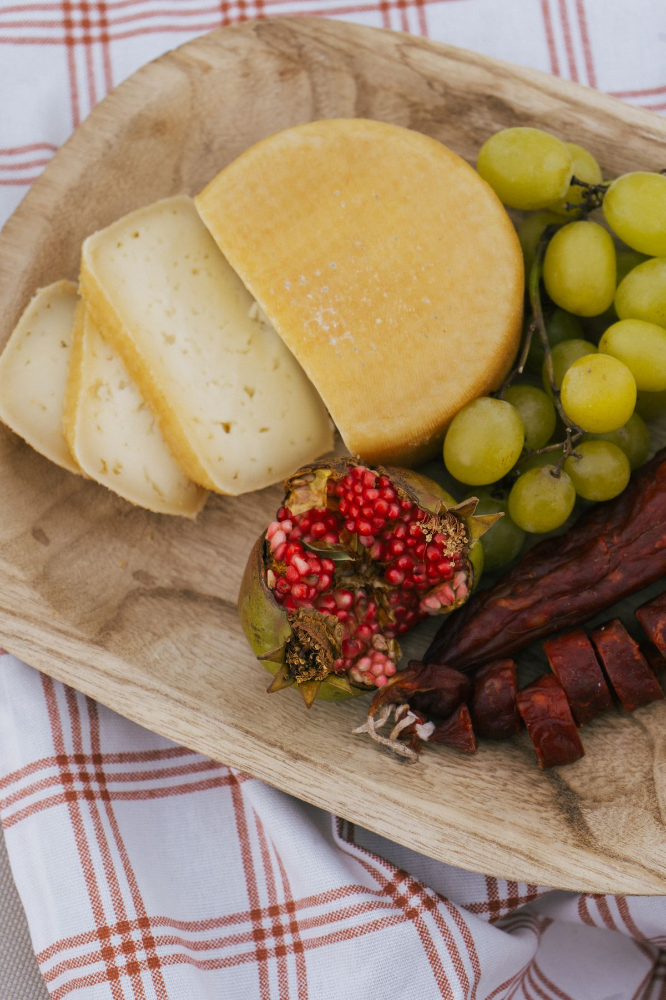

Historic Village of Portugal
Castelo Novo
One of the most beautiful Historic Villages of Portugal, with stone streets, a castle, rich architectural heritage and views over the Serra da Gardunha.
View on map
The region
Nature, historic villages, flavours and traditions of inland Portugal, starting from Casa da Tapada.
Our recommendations
Casa da Tapada is ideally located to discover some of the most iconic places of the Beira Interior region.
Historic Village of Portugal
One of the most beautiful Historic Villages of Portugal, with stone streets, a castle, rich architectural heritage and views over the Serra da Gardunha.
View on mapHistoric Village of Portugal
One of the most iconic villages in the country, famous for its huge granite boulders and houses built between the rocks.
View on mapNature
Perfect for nature walks, hiking trails, viewpoints and peaceful moments.
View on mapNature
Mountain landscapes, hiking and, in winter, snow. A must for nature lovers.
View on mapHistoric town
A historic town with traditional streets, architectural heritage and the authentic atmosphere of the Beira Interior.
View on mapTown
Regional cuisine, traditional shops, local products and cultural events.
View on mapFor warm days
A great option to enjoy nature and cool off during the warmer months.
View on map
Flavours
Fundão is cherry country. At Tapada, in season, there are also cherries and peaches to pick straight from the tree.
Cheeses, cured sausages, ham, olive oil and homemade bread are part of the local table. Some of them are waiting for you in the welcome basket.
Tours and experiences
Alpreade Xplore organises guided tours around our region to discover its landscapes, traditions and special places. A different way to experience your stay. See the available tours and activities on Instagram.
See on InstagramFestivals and traditions
A great opportunity to discover local traditions and spend time with the people who live here.
5 to 9 August 2027
One of the main celebrations in Atalaia do Campo, full of tradition, music and community spirit.
May / June
The village fair dedicated to local flavours. Exact dates are confirmed every year.
June
The month of the Fundão cherry, with festivals and markets dedicated to this fruit in several villages nearby.
In the village
Atalaia do Campo is a quiet village with cafés and local shops.
There are also restaurants in the village and nearby. For supermarkets, pharmacies and other services, the town of Fundão is just a few minutes away.
Casa da Tapada is the perfect starting point.
Book